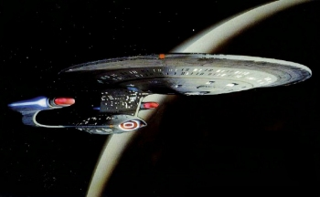

Welcome To The Federation Starship USS Orion
Select A Version Of This Site To View:
Frames
Best Viewed in:
No Frames
Best Viewed in Any Browser.
Every Page On This Website Was Created By
D. Snyder
, using:
The Framework for this website was designed by
D. Snyder
. The LCARS and Lite-Up JavaScript were originally designed by
Scotty
. Do Not Copy Them Without Permission.